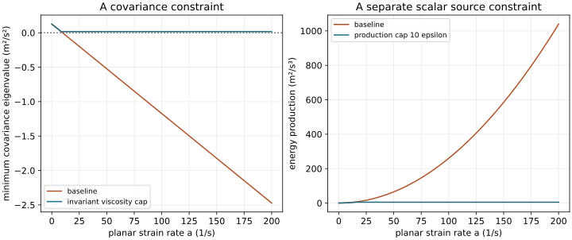

15. Realizability and production corrections
A turbulence covariance must assign a nonnegative variance to every direction. Positive turbulent kinetic energy is necessary but does not ensure that condition. A production limiter can control a large scalar source while leaving an impossible covariance untouched. These distinctions matter in strongly strained flow, where a linear stress closure can fail even with positive viscosity and well-behaved scalar transport equations. We will derive a pointwise covariance bound and compare its effect with corrections aimed directly at energy production.
Lessons 48–51 discuss input scales, realizability, stagnation anomalies and practical model limitations. The source's row-wise interpretation of a strain bound is replaced below by a derived principal-eigenvalue or invariant condition, checked against a primary Durbin report. Stagnation-point isotropy is treated as an assumption for a test, rather than a universal flow property. Named SST limiter variants are kept distinct.
15.1 Closure scales describe a model state, not every eddy L48 · 00:15
Let \(k>0\) be turbulent kinetic energy per mass, \(\epsilon>0\) its pseudo-dissipation rate, and \(C_\mu>0\) a dimensionless viscosity coefficient. The combinations \(t_t=k/\epsilon\), \(L_t=k^{3/2}/\epsilon\), and \(\nu_t=C_\mu k^2/\epsilon\) have units of time, length and kinematic viscosity. Each can be evaluated from exact statistical fields or modeled fields, but this does not make a closure length identical to every correlation length or the size of a visually identifiable eddy.
Lesson 48 uses rough-channel examples to show that individually plausible \(k\) and \(\epsilon\) trends need not imply a reliable ratio. For small relative perturbations, \(\delta L_t/L_t\approx(3/2)\delta k/k-\delta\epsilon/\epsilon\), while \(\delta\nu_t/\nu_t\approx2\delta k/k-\delta\epsilon/\epsilon\). A 10% high \(k\) and 10% low \(\epsilon\) produce exact factors \(1.28187748\) in length and \(1.34444444\) in viscosity. Independent errors can reinforce each other. The source's plotted values are not digitized here.
A length increasing toward a channel centre is not, by itself, physically meaningless merely because the near-wall energy peak lies elsewhere. Energy amplitude, correlation extent and energy-to-destruction ratio describe different properties. What needs qualification is interpreting one chosen ratio as a universal eddy size. Similarly, a stress-response coefficient can have a useful physical interpretation while failing as a universal material viscosity.
The source introduces a mean-field alternative associated with scale-adaptive simulation, or SAS. With mean strain \(S_{ij}=(\partial_jU_i+\partial_iU_j)/2\), define \(\mathcal S=\sqrt{2S_{ij}S_{ij}}\) and the raw von Kármán length
The Laplacian magnitude has units \(\mathrm{m^{-1}\,s^{-1}}\), so the ratio is a length. In a one-dimensional log profile, \(\mathcal S=|U'|=u_\tau/(\kappa y)\), \(|U''|=u_\tau/(\kappa y^2)\), and \(L_{\rm vK}=\kappa y\). In uniform simple shear or a nonzero linear stagnation field, the Laplacian is zero despite nonzero strain; the raw ratio is undefined and formally diverges as its denominator tends to zero. It is not automatically a finite geometric length.
The inspected Foundation 4.1 SST-SAS source function includes a regularized derivative ratio, a grid-related lower bound and a source limiter. That context matters: one ratio is not the entire SAS model. Using a computed mean gradient also does not make a RANS calculation resolve turbulent eddies. Here the raw length is a diagnostic of local variation; no SAS simulation or full derivation is claimed.
15.2 Nonnegative coordinate variances are only the first test L48 · 13:33
For zero-mean velocity fluctuations \(u_i'\), define \(R_{ij}=\mathbb E[u_i'u_j']\). This is a symmetric covariance per mass, not the negative density-weighted stress sometimes used in the mean momentum equation. For any real fixed vector \(a_i\),
A symmetric matrix satisfying (15.1) is positive semidefinite, abbreviated PSD. Its eigenvalues are nonnegative and its trace is \(2k\geq0\). Zero eigenvalues are allowed, including a two-component state or a fluctuation-free direction. “Must remain positive” in the source should therefore be read as nonnegative, unless a separate nonsingularity assumption is made.
Choosing coordinate directions gives \(R_{ii}\geq0\), without summation on a selected \(i\). Applying nonnegativity to \(u_i'+\alpha u_j'\) for every real \(\alpha\) yields the quadratic \(R_{ii}+2\alpha R_{ij}+\alpha^2R_{jj}\geq0\), so \(R_{ij}^2\leq R_{ii}R_{jj}\). If both variances are positive, the component correlation \(r_{ij}=R_{ij}/\sqrt{R_{ii}R_{jj}}\) lies in \([-1,1]\). If one variance is zero, PSD requires its covariance with every other component to vanish; the normalized coefficient is then undefined, not a number to divide by zero.
All pairwise correlations can pass while the full covariance fails
Consider the dimensionless matrix with every diagonal equal to 1 and every off-diagonal equal to \(-0.75\). All variances are positive and every pairwise correlation has magnitude \(0.75<1\). Nevertheless the unit vector \((1,1,1)/\sqrt3\) has variance \(1+2(-0.75)=-0.5\). Its eigenvalues are \(-0.5,1.75,1.75\), and its determinant is \(-1.53125\).
For a symmetric \(3\times3\) covariance, all principal minors must be nonnegative, including the determinant, not just the three \(2\times2\) conditions. Positive trace is still weaker. This counterexample needs no turbulence simulation; it rules out any ensemble with the proposed second moments.
Conversely, a symmetric PSD matrix is a realizable second-moment matrix in the elementary probabilistic sense. If \(R=Q\,\mathrm{diag}(r_1,r_2,r_3)Q^T\), choose independent random signs \(\xi_\alpha=\pm1\), each of mean zero and variance one, and define \(\boldsymbol u'=Q\,\mathrm{diag}(\sqrt{r_1},\sqrt{r_2},\sqrt{r_3})\boldsymbol\xi\). Its covariance is \(R\). This construction proves moment admissibility at one point; it does not supply a spatially divergence-free Navier–Stokes field or an accurate turbulence history.
15.3 Incompressible strain can produce a negative modeled variance L49 · 00:16
The linear incompressible Boussinesq closure is \(R^m=(2k/3)I-2\nu_tS\), where \(I\) is the identity matrix. Its trace is \(2k\) because \(\mathrm{tr}\,S=\nabla\cdot\boldsymbol U=0\). The coordinate normal variance is \(R_{11}^m=2k/3-2\nu_t\partial_1U_1\). A sufficiently strong positive extension can make it negative even when \(k,\nu_t\) are positive.
“Normal extension” should not be confused with volumetric strain. The latter is the trace of strain and is zero here. Also, individual off-diagonal velocity gradients are not rotation tensors: their symmetric sum contributes shear strain and their antisymmetric difference contributes rotation. A gradient can be large in one coordinate frame and appear off-diagonal after rotating that frame. A realizability test must survive such a coordinate change.
Take an ideal local planar stagnation field \(\boldsymbol U=(a x,-a y,0)\), \(a>0\). Its strain is \(\mathrm{diag}(a,-a,0)\), its divergence and vorticity are zero, and
The extensional variance fails when \(\nu_ta>k/3\). If the incoming coordinate instead compresses strongly, incompressibility forces compensating extension elsewhere. The source's summed transverse argument captures this: \(R_{22}^m+R_{33}^m=4k/3+2\nu_t\partial_1U_1\). A sufficiently negative \(\partial_1U_1\) makes the sum negative, requiring at least one negative term. It does not prove both are negative.
Positive energy and production coexist with an impossible stress
Use our recurring state \(k=0.19\ \mathrm{m^2\,s^{-2}}\), \(\epsilon=0.5\ \mathrm{m^2\,s^{-3}}\), \(C_\mu=0.09\). It gives \(\nu_t=0.006498\ \mathrm{m^2\,s^{-1}}\). At \(a=100\ \mathrm{s^{-1}}\), the smallest modeled variance is \(-1.17293333\ \mathrm{m^2\,s^{-2}}\), although the trace remains \(0.38\). Modeled production is \(2\nu_tS:S=4\nu_ta^2=259.92\ \mathrm{m^2\,s^{-3}}\), also positive.
The field is a local gradient experiment, not a no-slip wall solution: a complete impingement flow has additional spatial structure. Its purpose is to exhibit a constitutive failure. A negative modeled variance need not make the separately transported scalar \(k\) negative or cause an immediate numerical crash. A solver can converge while carrying this local inconsistency.
15.4 Derive an invariant viscosity or time-scale bound L50 · 00:15
Because \(S\) is symmetric, it has orthonormal principal axes with real eigenvalues \(\lambda_\alpha\), \(\alpha=1,2,3\). In those axes \(R^m\) is diagonal with eigenvalues \(2k/3-2\nu_t\lambda_\alpha\). For \(k\geq0,\nu_t\geq0\), the condition is therefore
If \(S=0\), no finite strain bound is needed: \(R^m=2kI/3\). A nonzero trace-free \(S\) always has a positive largest eigenvalue. For \(k=0\) and nonzero strain, the admissible nonnegative viscosity under this model is zero. Numerical division by a zero strain invariant should be handled by this limiting branch, not an unexplained dimensionless tiny constant.
An eigenvalue-free sufficient bound follows from incompressibility. Let \(m=\lambda_{\max}>0\). The other eigenvalues sum to \(-m\); their squared sum is at least \(m^2/2\). Thus \(S:S\geq3m^2/2\), so \(m\leq\Lambda=\sqrt{(2/3)S:S}\). Replacing \(m\) by the larger \(\Lambda\) gives the conservative cap \(\nu_t\leq k/(3\Lambda)\). This contraction sums over both indices. It is a rotational invariant.
Lesson 50 attributes the constraint to Durbin's 1996 work. We inspected the earlier primary Durbin 1994 report, §2.4, printed pp. 102–104, including a visual check of p. 103's eigenvalue derivation. It treats principal strain eigenvalues and bounds the turbulent time. Our derivation above makes the same mathematical distinction. No reading of the separately mentioned 1996 paper is claimed.
The caption's row-wise expression \(\sqrt{(2/3)\sum_jS_{ij}^2}\) for each \(i\) is neither the principal eigenvalue nor the invariant \(\Lambda\). It cannot be substituted as an exact expression for \(S_{ii}\), and a row-wise cap is not a general PSD guarantee. For a rotated planar strain with \(S_{12}=S_{21}=a\) and zero diagonals, its nonzero row estimate is \(\sqrt{2/3}\,a<\lambda_{\max}=a\). Capping at \(k/(3\sqrt{2/3}\,a)\) still leaves a negative principal covariance. Coordinate diagonal checks miss it because all those modeled diagonals equal \(2k/3\).
Exact and conservative caps, with their scope
At the state and strain above, (15.2) caps viscosity at \(0.00063333\ \mathrm{m^2\,s^{-1}}\), giving zero minimum variance and production \(25.33333333\). The invariant cap is \(0.00054848\), giving minimum variance \(0.01697012\) and production \(21.93931023\). The incorrect row cap in the rotated example is \(0.00077567\), leaving eigenvalue \(-0.02846768\).
For \(\nu_t=C_\mu k t_t\), implement the invariant condition as \(t_t=\min(k/\epsilon,1/(3C_\mu\Lambda))\). For \(\nu_t=k t_\omega\), it is \(t_\omega=\min(1/\omega,1/(3\Lambda))\). The example gives \(0.03207501\ \mathrm s\) and \(0.00288675\ \mathrm s\), respectively. These use different viscosity normalizations and are not supposed to be the same number.
Use the chosen viscosity consistently in momentum, production and modeled diffusion if that is the declared modified model. The bound establishes pointwise PSD for this linear covariance under its sign and incompressibility assumptions. It does not establish correct wall anisotropy, transport, temporal positivity of every scalar update or accurate mean flow. A more general compressible or nonlinear stress closure needs its own constraint.
15.5 Zero isotropic production is a conditional comparison L50 · 11:31
Suppose the actual covariance at a point and instant is isotropic: \(R_{ij}=2k\delta_{ij}/3\). Then incompressibility gives exactly \(\mathcal P=-R_{ij}\partial_jU_i=-(2k/3)\partial_iU_i=0\), for any local incompressible mean gradient. No approximation of individual off-diagonal gradients is needed for this result. The Boussinesq model in nonzero strain instead supplies \(\mathcal P_m=2\nu_tS:S>0\) when \(\nu_t>0\).
This is the source's useful stagnation comparison, with its premise exposed. A stagnation region is not guaranteed to have isotropic turbulence. Strain can distort an initially isotropic state: its exact Reynolds-stress production tensor at that state is \(P_{ij}=-(4k/3)S_{ij}\), whose trace is zero but whose individual components differ. Pressure redistribution, transport and destruction also enter the subsequent covariance evolution. An initially zero scalar production does not imply zero \(k\), zero turbulent fluctuations or permanent isotropy.
The closure's instantaneous stress–strain response has therefore replaced information about the evolving covariance. A limiter can restrain that response, but a claim that true production must vanish throughout every impingement flow would be another unsupported closure. The primary report's stagnation anomaly motivates a bounded response, rather than that universal assertion.
15.6 A scalar production correction answers another question L51 · 00:15
A direct scalar cap uses \(\widehat{\mathcal P}=\min(\mathcal P_m,C_P\epsilon)\), \(C_P>0\). Both arguments have units \(\mathrm{m^2\,s^{-3}}\). Calling this an “explicit” correction describes changing the source directly; it does not specify an explicit numerical time integrator. A time-scale or viscosity change acts indirectly on production and other terms. It also does not, by itself, specify an implicit time discretization.
A \(k\)–\(\omega\) cap may use destruction \(\beta_*k\omega\) in place of \(\epsilon\). The official SST variant definitions distinguish the original recommended factor 20 in the \(k\) production from SST-2003's factor 10 used in both equations. They also distinguish the corrected production source in the \(\omega\) equation. The lecture's factor 10 should not be identified as the exact original 1993/1994 specification. A source cap, viscosity limiter and model version must be reported together.
For our planar-strain example, choosing \(C_P=10\) limits the scalar source from \(259.92\) to \(5\ \mathrm{m^2\,s^{-3}}\). If the momentum stress is unchanged, its negative covariance eigenvalue \(-1.17293333\) is unchanged too. A production cap alone is not a realizability proof. Conversely the invariant viscosity cap guarantees PSD here but still leaves production \(21.93931023\), which is not zero for the stipulated instantaneous isotropic comparison.
Energy consistency also needs attention. In the mean kinetic-energy equation the modeled stress transfers \(-\mathcal P_m\); in a \(k\) equation using a different capped source it supplies \(+\widehat{\mathcal P}\). Their sum contains \(\widehat{\mathcal P}-\mathcal P_m\), rather than exact cancellation. Here that is \(-254.92\ \mathrm{m^2\,s^{-3}}\). A model may deliberately introduce an additional effective sink or approximation, but it should not claim that unchanged mean stress and separately capped turbulent production preserve the original exact transfer identity. Changing the common stress consistently preserves the algebraic cancellation of its own transfer.
The source also introduces Kato–Launder production. Define mean rotation \(W_{ij}=(\partial_jU_i-\partial_iU_j)/2\) and \(\Omega=\sqrt{2W_{ij}W_{ij}}\). The incompressible correction is \(\mathcal P_{\rm KL}=\nu_t\mathcal S\Omega\). The SST resource documents this product separately from a vorticity-squared variant. It is not merely substituting one derivative component for another.
Three local checks clarify its response. In pure planar strain, \(\mathcal S=2a,\Omega=0\), so it gives zero. In simple shear \(U=Gy\), \(\mathcal S=\Omega=|G|\), so it equals the baseline \(\nu_tG^2\). In rigid rotation, \(\mathcal S=0\), so it again gives zero despite nonzero \(\Omega\). The comparisons test formula behavior, not universal accuracy. This changed scalar source is not automatically the contraction of the unchanged modeled momentum stress.

15.7 Admissibility does not establish prediction accuracy L51 · 18:50
Lesson 51 reports a wake in which a time-scale constraint allowed an unsteady mean-flow computation to develop oscillations that an unconstrained calculation did not show. That is a consequential change in modeled dynamics; reproducing it would require the geometry, boundary data, model details, disturbance, mesh and time study. The caption alone does not establish that every constrained wake has the correct shedding frequency or force statistics. We retain the example qualitatively.
The source next compares several eddy-viscosity models with measurements of dense-gas dispersion, including a complex terrain case. The reported discrepancy motivates checking the target observable rather than judging a model only from smooth-wall velocity agreement. We have not digitized those plots or reconstructed their experiments, and do not repeat exposure or health thresholds from the lecture. This discussion concerns mechanics-model evidence and does not provide exposure guidance.
When several models sharing the same stress or scalar-flux assumptions agree with each other, their small spread need not bound their common error. A realizable stress is still compatible with a poorly represented scalar flux, buoyancy response, inflow state or terrain effect. A more elaborate model adds capabilities and costs; it does not receive automatic validation by having more equations. A defensible comparison checks the actual quantity of interest against independent observations with uncertainties and a declared numerical study.
These limits lead naturally to Reynolds-stress transport. Its six covariance equations can represent directional evolution that a scalar viscosity suppresses. They still require modeled pressure correlations, transport and destruction. Realizability and near-wall structure will remain constraints on those new models, rather than problems that disappear when the equation count grows.
15.8 Reproduce the covariance and production diagnostics
Run ch15_realizability.py with standard Python 3. It uses known analytic eigenvalues and explicit local gradients. The listing and observed output are validated together. The negative examples deliberately fail covariance admissibility; they are not generated samples of physically possible turbulence.
"""Covariance and production diagnostics; no spatial RANS solution."""
from math import sqrt
k,epsilon,Cmu=.19,.5,.09
base=Cmu*k*k/epsilon
print(f"baseline viscosity m2/s: {base:.8f}")
print(f"pairwise-bound counterexample eigenvalues: {-0.5:.8f}, {1.75:.8f}, {1.75:.8f}")
det=(1-(-.75))**2*(1+2*(-.75))
print(f"pairwise-bound counterexample determinant: {det:.8f}")
a=100.
strain_norm=sqrt(2*a*a)
lambda_bound=sqrt(2/3)*strain_norm
exact_cap=k/(3*a)
safe_cap=k/(3*lambda_bound)
for label,viscosity in (("baseline",base),("eigenvalue cap",min(base,exact_cap)),
("invariant cap",min(base,safe_cap))):
variances=[2*k/3-2*viscosity*a,2*k/3+2*viscosity*a,2*k/3]
production=4*viscosity*a*a
print(f"planar strain {label}: nu_t={viscosity:.8f}, "
f"min variance={min(variances):.8f}, production={production:.8f}")
if label!="baseline":
assert min(variances)>=-1e-14
# Rotate planar strain 45 degrees so positive eigenstrain is off diagonal.
row_estimate=sqrt(2/3)*a
row_cap=k/(3*row_estimate)
bad_eigenvalue=2*k/3-2*row_cap*a
print(f"rotated row-norm cap: nu_t={row_cap:.8f}, min covariance eigenvalue={bad_eigenvalue:.8f}")
assert bad_eigenvalue<0
production=4*base*a*a
limited=min(production,10*epsilon)
print(f"production-only cap: original={production:.8f}, capped={limited:.8f}, "
f"unchanged min variance={2*k/3-2*base*a:.8f}")
print(f"mean-plus-turbulent transfer imbalance with unchanged stress: {limited-production:.8f}")
print(f"isotropic instantaneous exact production: {0.:.8f}")
print(f"Kato-Launder pure strain production: {0.:.8f}")
shear=100.
S=shear
Omega=shear
print(f"simple shear baseline and Kato-Launder: {base*S*S:.8f}, {base*S*Omega:.8f}")
print(f"invariant limited k-epsilon time s: {min(k/epsilon,1/(3*Cmu*lambda_bound)):.8f}")
omega=epsilon/(Cmu*k)
print(f"invariant limited k-omega time s: {min(1/omega,1/(3*lambda_bound)):.8f}")
print(f"10% k high/epsilon low length ratio: {1.1**1.5/.9:.8f}")
print(f"10% k high/epsilon low viscosity ratio: {1.1**2/.9:.8f}")
kappa,y=.41,.002
ut=.4
gradient=ut/(kappa*y)
curvature=ut/(kappa*y*y)
print(f"log-profile von Karman length m: {kappa*gradient/curvature:.8f}")
print("uniform shear and nonzero linear strain: Laplacian=0; raw von Karman ratio undefined")
baseline viscosity m2/s: 0.00649800 pairwise-bound counterexample eigenvalues: -0.50000000, 1.75000000, 1.75000000 pairwise-bound counterexample determinant: -1.53125000 planar strain baseline: nu_t=0.00649800, min variance=-1.17293333, production=259.92000000 planar strain eigenvalue cap: nu_t=0.00063333, min variance=0.00000000, production=25.33333333 planar strain invariant cap: nu_t=0.00054848, min variance=0.01697012, production=21.93931023 rotated row-norm cap: nu_t=0.00077567, min covariance eigenvalue=-0.02846768 production-only cap: original=259.92000000, capped=5.00000000, unchanged min variance=-1.17293333 mean-plus-turbulent transfer imbalance with unchanged stress: -254.92000000 isotropic instantaneous exact production: 0.00000000 Kato-Launder pure strain production: 0.00000000 simple shear baseline and Kato-Launder: 64.98000000, 64.98000000 invariant limited k-epsilon time s: 0.03207501 invariant limited k-omega time s: 0.00288675 10% k high/epsilon low length ratio: 1.28187748 10% k high/epsilon low viscosity ratio: 1.34444444 log-profile von Karman length m: 0.00082000 uniform shear and nonzero linear strain: Laplacian=0; raw von Karman ratio undefined
15.9 Exercises with complete solutions
1. Prove the pairwise covariance bound and handle zero variance.
For arbitrary real \(\alpha\), \(\mathbb E[(u_i'+\alpha u_j')^2]=R_{ii}+2\alpha R_{ij}+\alpha^2R_{jj}\geq0\). If \(R_{jj}>0\), minimizing at \(\alpha=-R_{ij}/R_{jj}\) gives \(R_{ii}-R_{ij}^2/R_{jj}\geq0\). If \(R_{jj}=0\), a nonzero linear coefficient \(R_{ij}\) would make the expression negative for some \(\alpha\); hence \(R_{ij}=0\). The normalized correlation is defined only when both variances are positive.
2. Explain why three pairwise tests do not prove PSD.
For diagonal 1 and off-diagonal \(-3/4\), each pair has determinant \(1-9/16=7/16>0\). But the all-ones direction is an eigenvector with eigenvalue \(1-3/2=-1/2\), while orthogonal directions have eigenvalue \(1+3/4=7/4\). The full determinant is \((-1/2)(7/4)^2=-49/32\). Thus the matrix is not PSD. Trace \(3\) and positive coordinate variances do not remove the negative directional variance.
3. Derive the exact Boussinesq viscosity bound and its invariant sufficient version.
In principal strain axes, covariance eigenvalues are \(2k/3-2\nu_t\lambda_\alpha\). For nonnegative viscosity, the smallest is associated with \(\lambda_{\max}>0\), giving \(\nu_t\leq k/(3\lambda_{\max})\). Trace-free strain implies the other two eigenvalues sum to \(-\lambda_{\max}\), and their squared sum is at least half its square. Thus \(\lambda_{\max}\leq\sqrt{2S:S/3}\). The invariant cap substitutes that upper bound in the denominator and is sufficient, possibly more restrictive. For zero strain no division is required.
4. Why does the row-wise expression fail after a rotation?
For \(S_{12}=S_{21}=a>0\) and all other entries zero, strain eigenvalues are \(a,-a,0\). The two nonzero row estimates \(\sqrt{(2/3)\sum_jS_{ij}^2}\) equal \(\sqrt{2/3}\,a\), smaller than \(a\). Their cap permits \(\nu_t=k/(3\sqrt{2/3}\,a)\), so the minimum modeled covariance is \((2k/3)[1-\sqrt{3/2}]<0\). All coordinate diagonals remain \(2k/3\). A principal-axis or invariant criterion is required to test every direction.
5. Derive the two time-limit formulas from their respective viscosities.
For \(\nu_t=C_\mu k t_t\), the sufficient condition \(C_\mu k t_t\leq k/(3\Lambda)\) gives \(t_t\leq1/(3C_\mu\Lambda)\) for \(k>0\). For \(\nu_t=k t_\omega\), the result is \(t_\omega\leq1/(3\Lambda)\). Apply the minimum with the original positive time \(k/\epsilon\) or \(1/\omega\). The different constants reflect different time definitions; dropping \(C_\mu\) from only the first formula changes the cap.
6. Does isotropic zero production mean low turbulent energy?
No. At any positive \(k\), isotropic \(R=2kI/3\) gives \(\mathcal P=-(2k/3)\nabla\cdot U=0\) in incompressible motion. This is zero instantaneous exchange with mean energy through that contraction, not zero stored fluctuation energy. Its production tensor is \(-(4k/3)S\), which can change component energies with zero trace. Other exact terms also affect their evolution, so isotropy need not persist under strain.
7. Compare a scalar source cap with a stress cap and test energy transfer.
A scalar cap alters \(\widehat{\mathcal P}\) while leaving \(R^m\) unchanged unless another equation explicitly changes it. It cannot directly repair a negative covariance eigenvalue. Summing modeled mean and turbulent energy equations leaves \(\widehat{\mathcal P}-\mathcal P_m\) when the stress transfer remains \(-\mathcal P_m\). Here \(5-259.92=-254.92\). A common viscosity change modifies both contractions consistently and preserves cancellation of that modeled transfer, though it does not prove empirical accuracy.
8. Recover the log-profile von Kármán scale and identify a singular counterexample.
For \(U'=u_\tau/(\kappa y)\), \(U''=-u_\tau/(\kappa y^2)\), so \(\kappa|U'|/|U''|=\kappa y\). At \(\kappa=0.41,y=0.002\), it is \(0.00082\ \mathrm m\). For a linear mean field, second derivatives vanish while strain can be nonzero; the raw ratio is undefined. A numerical regularization must have the correct denominator units and a stated model role. It cannot be silently interpreted as evidence for a finite measured eddy size.